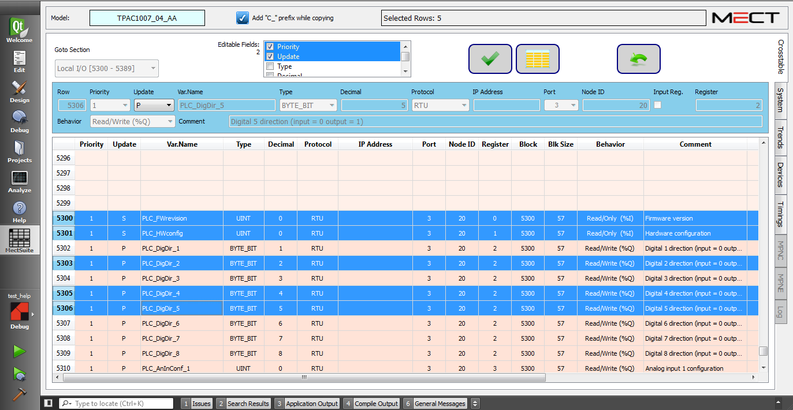

Cette fonction permet de modifier simultanément les paramètres de plusieurs variables, même si elles ne sont pas contiguës, par exemple la priorité, le protocole ou le nombre de décimales.
En appuyant sur le bouton Multi Line Edit et en allant sélectionner plus d'une variable dans la Crosstable, la fenêtre d'édition apparaîtra comme suit:

En appuyant á nouveau sur le bouton Multi Line Edit, vous revenez au mode principal (Single Line Edit)
Vous ne pouvez modifier que les champs sélectionnés dans la case Champs modifiables(Editable Fields):

Confirme les modifications apportées.
Annulle la dernière modification.